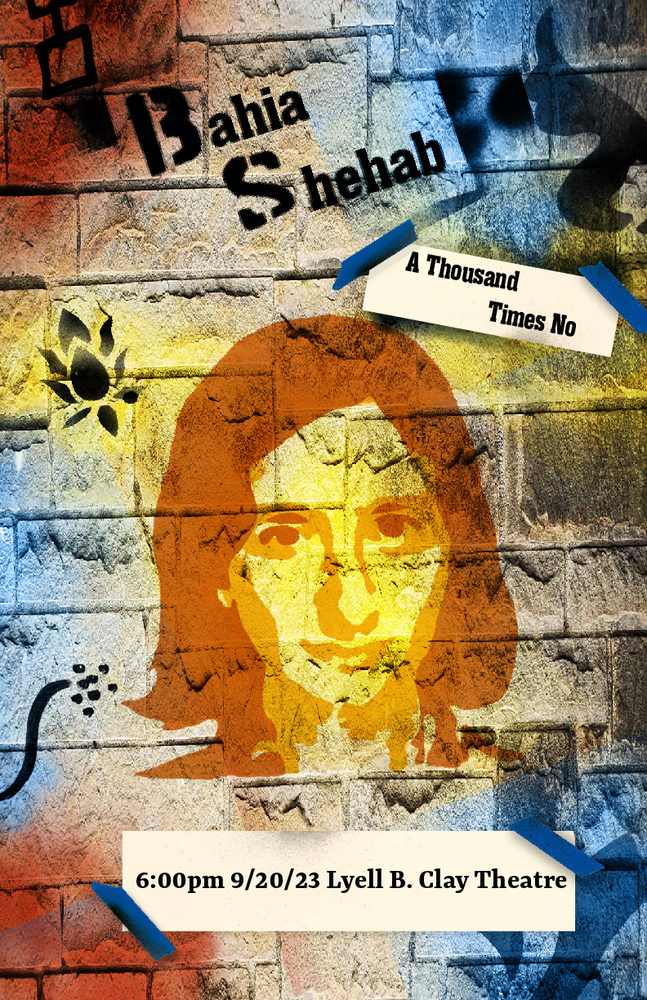
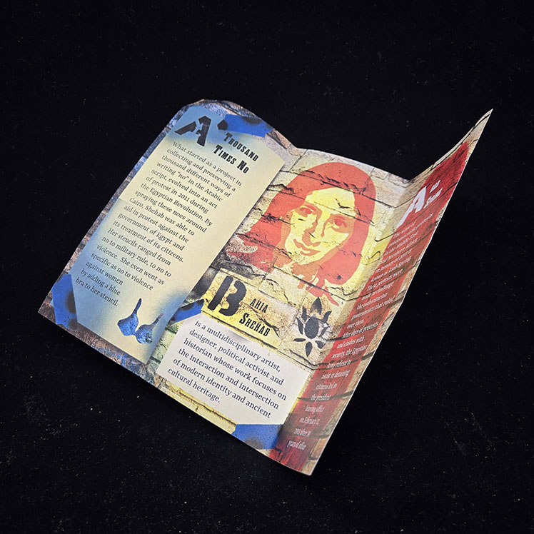
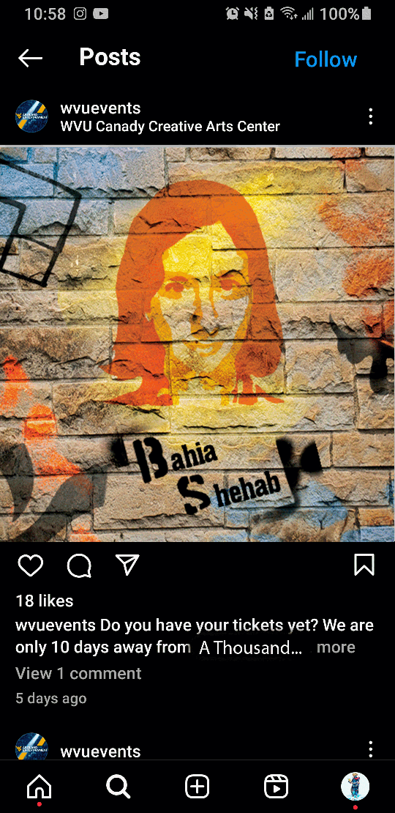
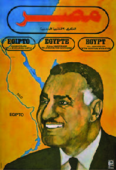

Smart People: Case Study
For this project, I researched a TED Talk speaker and the topic they spoke on. I then created a poster, brochure and a digital media post advertising this event. For my speaker, I chose Bahia Shehab and her speech, A Thousand Times No.
 For this project, I researched a TED Talk speaker and the topic they spoke on. I then created a poster, brochure and a digital media post advertising this event. For my speaker, I chose Bahia Shehab and her speech, A Thousand Times No.
Source: bahiashehab.com
View Her TALKGrafitti
Because Bahia used spray paint as her main form of expression, I knew I would need to use it in some way in my designs. So I created several templates of different “No’s” as well as a template of Bahia herself.
Color
While searching for my color palette and type, I knew I didn’t want this to feel like ancient Egypt so I looked at modern artwork and posters until I found this poster that was used during the Egyptian Revolution, an event that Bahia mentions throughout her talk.